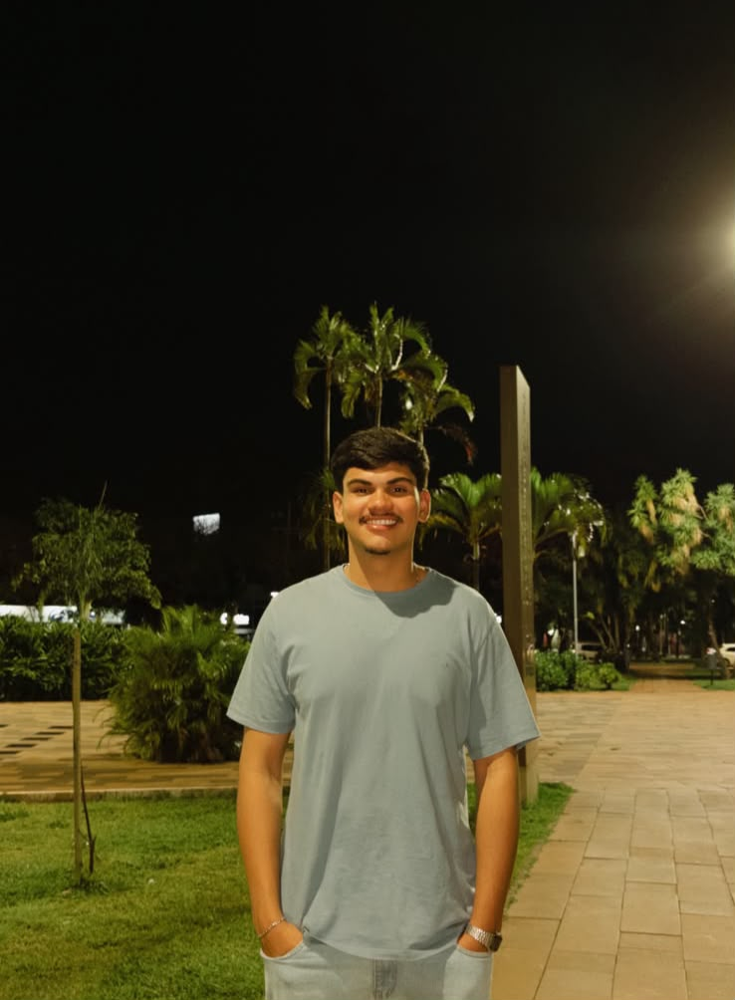
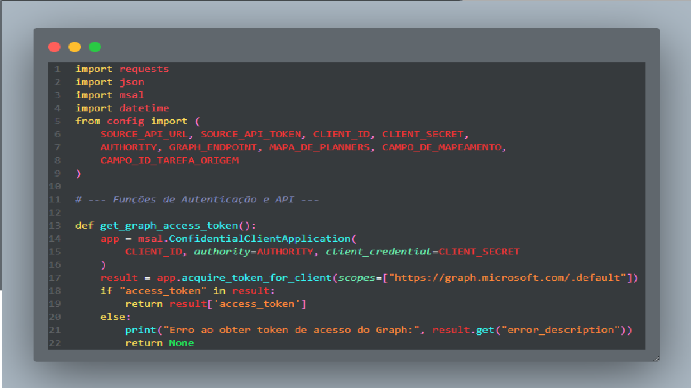
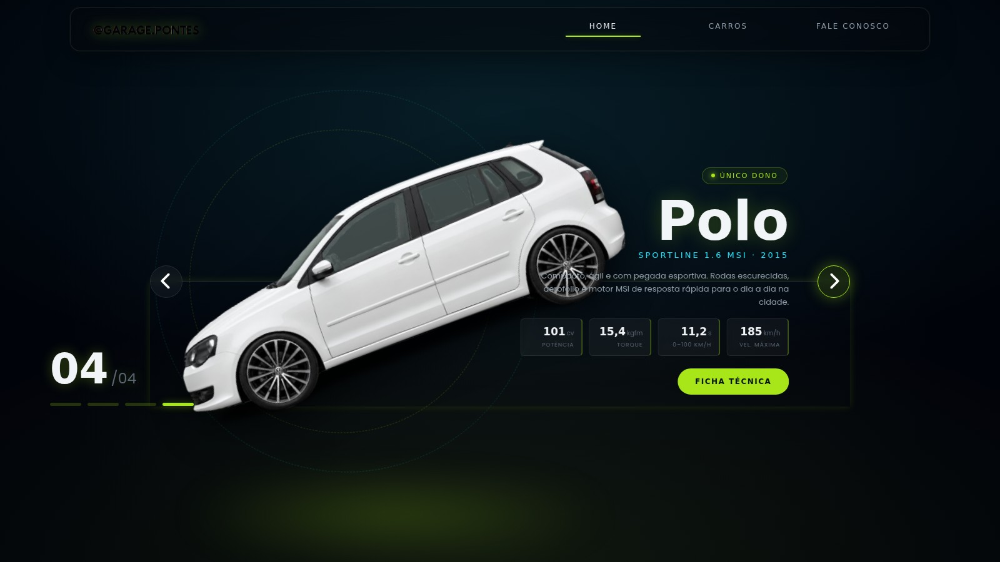

OLÁ, EU SOU ANALISTA DE PROJETOS & ENTUSIASTA DE DESENVOLVIMENTO
FELIPE PONTES DOS SANTOS
Atualmente estou atuando como Scrum Master. Sou um entusiasta de tecnologia, sempre buscando novas oportunidades para aprendizado e desenvolvimento pessoal e profissional. Durante minha trajetória, desenvolvi uma base forte em programação, algoritmos, arquitetura de software e metodologias ágeis. Minhas competências incluem: [.NET, JS, Front-End/Back-End], implementação de sistemas, Scrum, Kanban, foco em entrega contínua e melhoria constante. Qualidade de software, testes e automação também são áreas de meu interesse. Meu objetivo é expandir minhas habilidades e contribuir para projetos inovadores que tenham um impacto positivo.
QUEM SOU EU
Sobre Mim
Minha paixão pela agilidade e pelo papel de Scrum Master é complementada pela minha vivência prática em desenvolvimento. Isso me permite não apenas facilitar cerimônias e remover impedimentos, mas também entender sobre os desafios técnicos da equipe, promovendo uma comunicação mais eficaz e colaborativa.
Acredito na liderança servidora, na transparência e na melhoria contínua como pilares para construir times de alta performance e entregar produtos de valor. Busco constantemente aprimorar meus conhecimentos.
O QUE EU SEI FAZER
Habilidades
Scrum & Agile
Ferramentas de Gestão
Desenvolvimento
Interpessoais
MINHA TRAJETÓRIA
Experiência Profissional
Assistente de Projetos JR | Scrum Master
Benner Saúde · Maringá, Paraná
- Gestão e análise de indicadores para melhoria contínua.
- Suporte na tomada de decisões gerenciais.
- Colaborei com POs para refinar o backlog do produto.
- Controle e distribuição de demandas da equipe.
Jovem Aprendiz
Benner Saúde · Maringá, Paraná
- Gestão de fornecedores e contratos.
- Controle financeiro e faturamento de projetos.
- Participei ativamente de equipes ágeis.
O QUE EU CONSTRUÍ
Meus Principais Projetos

Automação Planner | Script
Papel: Scrum Master
Descrição: ETL Script para automação de fluxo de trabalho e gestão de projetos.
Impacto: Eliminação completa de trabalho manual — o impacto mais imediato é a automação de um processo que era 100% manual, repetitivo e demorado, liberando as equipes de uma tarefa de baixo valor.

Minha Garagem
Papel: Desenvolvedor
Descrição: Projeto técnico pessoal.
Impacto: O objetivo do site foi simples: apenas mostrar informações sobre a garagem e os veículos que eu já possuo.
RECONHECIMENTO & FORMAÇÃO
Certificações
Gerente Ágil
Descrição: Gestão Ágil e Scrum pela Alura, com foco na liderança de times de alta performance e otimização de fluxos de trabalho. Capacitado para atuar como Scrum Master ou Agile Master, facilitando cerimônias, removendo impedimentos e utilizando métricas (como Lead Time e Throughput) para garantir a entrega contínua de valor. Forte base em gestão de conflitos e cultura de melhoria contínua (Kaizen).
Engenharia de Software
Descrição: Formação em Engenharia de Software pela Alura, com foco na construção de sistemas escaláveis, sustentáveis e de alta qualidade. Aprofundamento técnico em arquitetura de software (Clean Architecture), padrões de projeto (Design Patterns) e boas práticas de desenvolvimento (SOLID), visando não apenas a escrita de código, mas a longevidade e a manutenibilidade das aplicações.
Formação Acadêmica
Bacharelado Engenharia de Software — Unicesumar (2024 – 2028)
Ensino Médio Completo — Parigot de Souza (2017 – 2023)
VAMOS CONVERSAR
Entre em Contato
Estou disponível para novas oportunidades e colaborações. Vamos conversar!